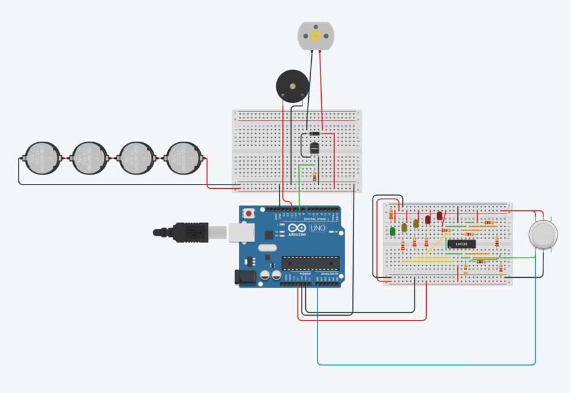

Overview:
Mainstream SMART home tech caters to luxury living in the developed west - not to developing nations. While Western homes get voice-controlled lights, Sri Lankans face deadly risks from substandard gas imports - like the 2021 gas canister explosion crisis that rocked households nationwide. Drawing on my own Sri Lankan roots, I embraced the challenge of developing a SMART home package for the typical Sri Lankan home.
Technical implementation:
| System | Electric Components | Sensors | Actuators |
|---|---|---|---|
| Air Purification and Warning System |
|
Winsen Gas Sensor |
|
How it works:
Detection: NO2, PM2.5 Particles, CH4, CO
Filtration:
Monitoring:
Warning:
I prototyped and tested both the hardware and code required for this concept on TinkerCAD
